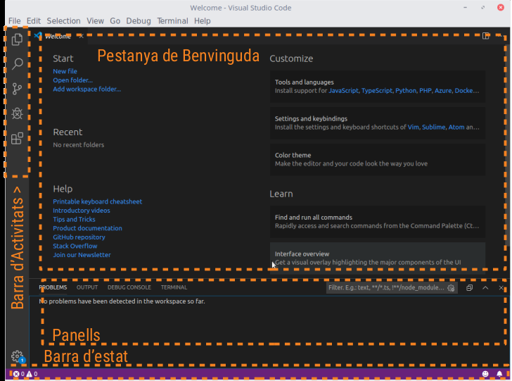
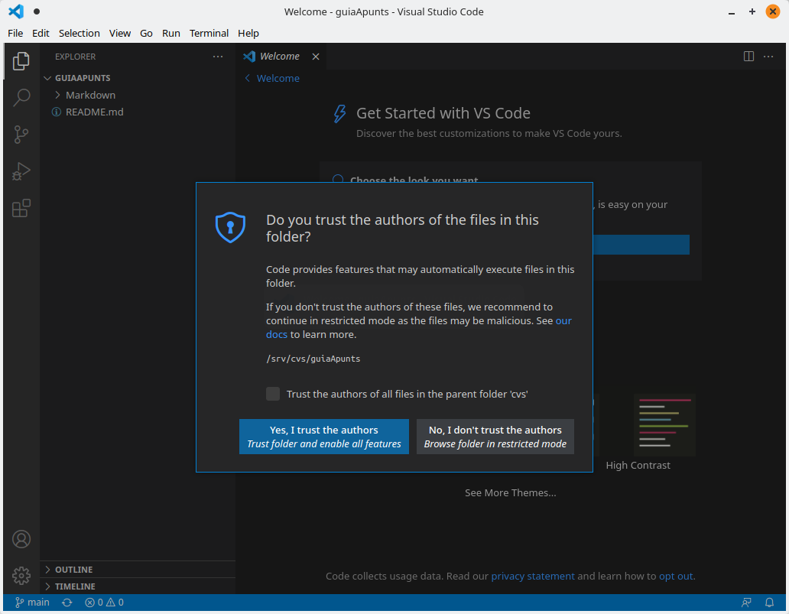
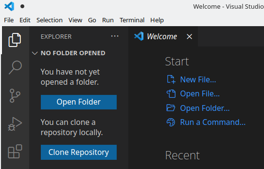
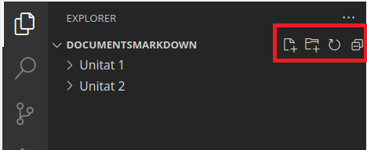
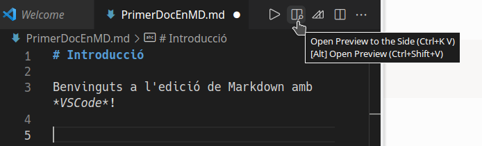
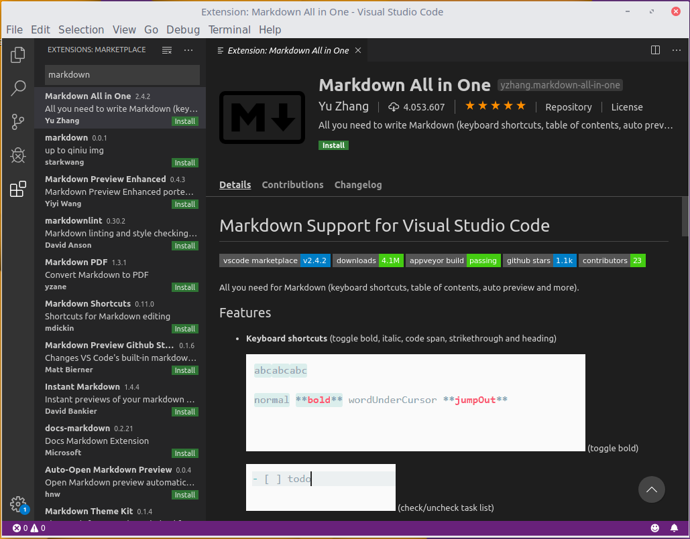

Edición de Archivos Markdown
Markdown es un formato de archivo de texto sencillo, por lo que cualquier editor básico de texto es suficiente para trabajar con él. Sin embargo, existen herramientas especializadas para la edición de este tipo de archivos, tanto en entornos de escritorio como en aplicaciones web.
A continuación, te presentamos algunas de ellas, aunque hay muchas más:
-
Editores en Línea:
- Dillinger: https://dillinger.io/
- Stackedit: https://stackedit.io/
-
Editores de Escritorio:
- Typora: https://typora.io/
- WriteMonkey: https://writemonkey.com/
- Haroopad: http://pad.haroopress.com/
La mayoría de estas herramientas cuentan con una interfaz dividida en dos partes: en una se escribe el contenido en formato Markdown y en la otra se muestra una vista previa en tiempo real. Typora, en particular, se diferencia por ofrecer una experiencia tipo WYSIWYG, ya que renderiza automáticamente el texto mientras lo escribes.
1. Visual Studio Code (VS Code)
En este documento nos centraremos en Visual Studio Code (VSCode), un editor desarrollado por Microsoft. Aunque está diseñado principalmente para trabajar con código fuente de programas, soporta Markdown de forma nativa y permite previsualizar los documentos.
Características principales de VS Code:
- Ligero y multiplataforma: Funciona en Windows, macOS y Linux.
- Interfaz limpia: Ofrece una experiencia de usuario sencilla y personalizable.
- Paleta de comandos: Permite acceder rápidamente a funcionalidades mediante atajos de teclado.
- Terminal integrada: Incluye una terminal que facilita el trabajo en proyectos complejos.
- Soporte de control de versiones: Compatible con sistemas como Git.
- Extensiones: Permite ampliar su funcionalidad mediante plugins.
1.1. Extensión Markdown All In One
Una de las extensiones más útiles para trabajar con Markdown en VS Code es Markdown All In One.
Esta extensión añade funciones como:
- Atajos de teclado para trabajar más rápido.
- Generación automática de tablas de contenidos.
- Varias utilidades que mejoran la experiencia con Markdown.
1.2. Instalación de Visual Studio Code
La instalación más sencilla de VS Code es descargarlo desde su sitio oficial: https://code.visualstudio.com/download.
Para más información sobre el proceso de instalación en sistemas Linux y Windows, puedes consultar la documentación oficial del editor:
2. Primeros Pasos con VS Code
Una vez instalado, puedes acceder a Visual Studio Code desde el menú principal de tu sistema, en la categoría de Programación.
Al abrirlo por primera vez, se te pedirá que elijas entre un tema claro o uno oscuro para personalizar la apariencia del editor. Puedes seleccionar cualquiera de ellos según tus preferencias.
La interfaz principal de VS Code se ve aproximadamente así:

2.1. Elementos principales de la interfaz:
-
Barra de actividades: Ubicada a la izquierda, contiene cinco actividades principales:
- Explorador de archivos: Para gestionar tus proyectos y archivos.
- Búsqueda de texto: Herramienta para buscar contenido dentro del proyecto.
- Control de versiones: Soporte integrado para Git.
- Depuración: Permite ejecutar y depurar código.
- Extensiones: Gestiona y añade funcionalidades adicionales al editor.
-
La ventana de bienvenida: La ventana de bienvenida ocupa la parte superior del editor y ofrece opciones iniciales como crear un archivo nuevo, abrir una carpeta o añadir un espacio de trabajo.
- Paneles adicionales: debajo de la ventana principal encontrarás diversos paneles que muestran información sobre la depuración, errores y advertencias o la terminal integrada de VS Code.
- Barra de estado: en la parte inferior del editor está la barra de estado, que muestra información sobre el proyecto y los archivos abiertos.
En versiones recientes, al abrir una carpeta nueva, el editor puede pedir que confirmes si confías en la fuente del código dentro de esa carpeta.

Para más detalles sobre la interfaz de VS Code, puedes consultar:
3. Trabajando con VS Code y Markdown
Con VS Code puedes editar archivos directamente, pero lo más útil es abrir una carpeta completa para trabajar con todos los archivos que contiene.

- Haz clic en el botón Open Folder del explorador de archivos.
- Selecciona una carpeta. Por ejemplo, una llamada
DocumentosMarkdown.
La estructura de la carpeta se mostrará como un árbol en el explorador de archivos, con todas las carpetas y archivos dentro. Por ejemplo, podrías ver una carpeta principal con subcarpetas como Unidad 1 y Unidad 2.

Al lado del nombre de la carpeta principal, encontrarás cuatro iconos:
- Crear documento nuevo: Agrega un archivo en la carpeta seleccionada.
- Crear carpeta nueva: Agrega una subcarpeta.
- Refrescar vista: Actualiza el contenido del explorador.
- Contraer árbol: Muestra solo los elementos del nivel principal.
3.1. Crear un documento nuevo
- Haz clic en el primer icono para crear un documento.
- Introduce un nombre para el archivo. Recuerda usar la extensión
.mdpara que sea reconocido como un archivo Markdown.
Nota importante: Aunque los archivos Markdown son de texto, usar la extensión .md asegura que las aplicaciones los reconozcan correctamente. En VS Code, estos archivos aparecerán con un icono específico.
3.2. Editar y previsualizar un archivo Markdown
Una vez creado un archivo, puedes empezar a escribir directamente. En la parte superior derecha de la ventana del editor, verás varios iconos. Uno de ellos es un rectángulo dividido con una lupa. Este icono permite activar la vista dividida para:
- Mostrar el texto que escribes en la parte izquierda.
- Ver una previsualización en tiempo real en la parte derecha.

Para cerrar la vista previa, haz clic en la x junto al nombre del archivo en la previsualización.
4. Instalación de plugins en VS Code
VS Code es ligero pero extremadamente flexible gracias a las extensiones.
4.1. Cómo instalar extensiones
- Haz clic en la actividad de Extensiones en la barra de actividades.
- Usa el cuadro de búsqueda para buscar, por ejemplo,
Markdown.
Aparecerán diversas extensiones relacionadas. Aunque no es obligatorio instalar extensiones para trabajar con Markdown, algunas como Markdown All In One ofrecen funciones adicionales interesantes.
Para instalar una extensión:
- Haz clic en el botón Install que aparece junto a la descripción de la extensión.

¡Explora estas herramientas y saca el máximo partido a VS Code trabajando con Markdown!